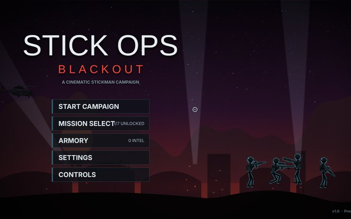

Stick Ops: Blackout
SHOOTER • 1 PLAYER • KEYBOARD + MOUSE
A cinematic military stickman shooter campaign: 7 missions of night infiltration, sniper overwatch, helicopter door-gunning, tank and jet missions, city street war and a silo countdown. No download, no sign-up.
▶ PLAY Stick Ops: Blackout NOWStick Ops: Blackout is one of 117 free retro games on Retro World. It runs right in your browser on phone, tablet, PC or TV — no download or account needed, and your progress saves on your device.